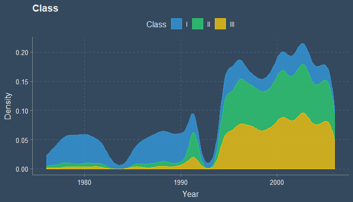
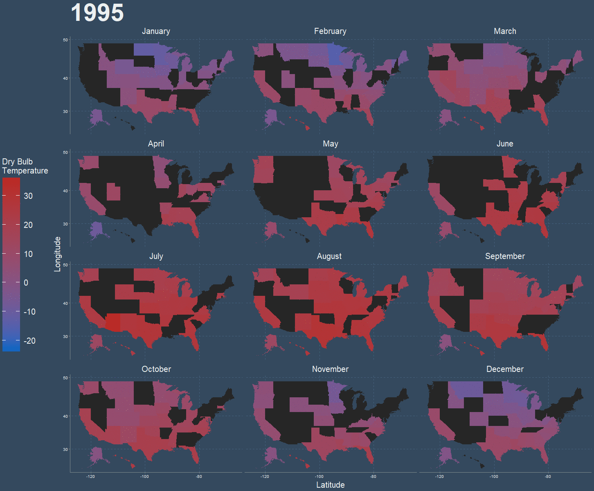
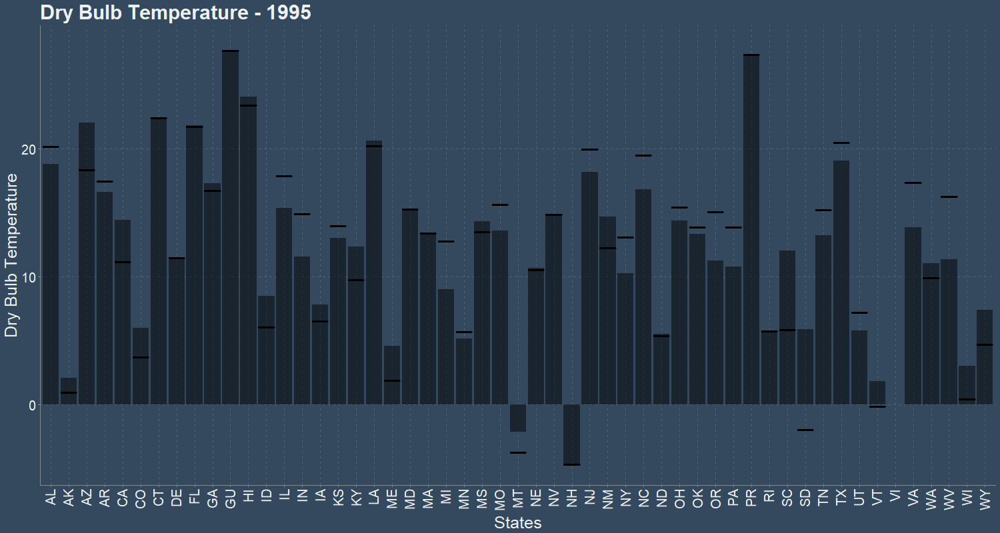

This is my submission for March 2019 - r/dataisbeautiful. Data - National Solar Radiation Data Base
The above bar graph shows the count of Station in each State, and their Class. Rhode Island, Virgin Islands, Guam and Delaware have the fewest stations.
The data consists of multiple datasets from each station from 1975 to 2005. The data is incomplete and each dataset consists of 12 months of data distributed over various years. The above beeswarm shows the dataset available for each State and Year/Month. There is a missing gap between 1983-1985, and 1992-1994. Majority of Class III datasets are located above 1995.
The above two density graphs shows the density of Dataset as year progress, and their Class. Between 1975 to 1990 most of the dataset comes from Class I stations, While dataset above 1995 consists mostly of Class II and Class III. The two gaps in dataset can also be seen in this graph.
Below animations show Dry Bulb Temperature and Dew Point Temperature. The dry-bulb temperature is the temperature of air measured by a thermometer freely exposed to the air but shielded from radiation and moisture. The dew point is the temperature to which air must be cooled to become saturated with water vapor.
 Above animations shows Dry Bulb Temperature (*C) for each month animated over 1995 to 2005, and the mean(bar) and median(dash) dry bulb temperature over the years 1995 to 2005. Black states denote data unavailable. December, January, and February being the coldest month while May, June, July being the hottest. Effects of Global warming can be seen in as less and less states average negative temperature in later years.

Above animations shows Dew Point Temperature (*C) for each month animated over 1995 to 2005, and the mean(bar) and median(dash) dew bulb temperature over the years 1995 to 2005. Black states denote data unavailable. Southern states are hotter than Northern states. Guam, Hawaii, Puerto Rico, Virgin Islands are the hottest states.
Wind Speed is expressed as meters per second.
Above animation shows Wind Speed for each month animated over 1995 to 2005. Black states denote data unavailable. New Hampshire, February 2002 is the windiest month by a wide margin.
Above animation shows the mean(bar) and median(dash) wind speed over the years 1995 to 2005. Wind Speed of most States average between 2.5 to 5 meter per second. New Hampshire has highest average wind speed, at 9 meters per second on 1996.
Relative Humidity is expressed as a percentage; a higher percentage means that the air–water mixture is more humid. At 100% relative humidity, the air is saturated and is at its dew point.
Above animation shows relative humidity for each month animated over 1995 to 2005. Black states denote data unavailable.
Above animation shows the mean(bar) and median(dash) relative humidity over the years 1995 to 2005. Relative Humidity of most States hover around 75%. Relative Humidity of Arizona, New York, Wyoming, Utah hover around 50%.
Sky Cover is calculated as total sky cover + (opaque sky cover/2). Total Sky cover and Opaque sky cover are each measured in 1/10th.
Above animation shows sky cover for each month animated over 1995 to 2005. Black states denote data unavailable.
Above animation shows the mean(bar) and median(dash) sky cover over the years 1995 to 2005. 1999 Guam has the highest sky cover.